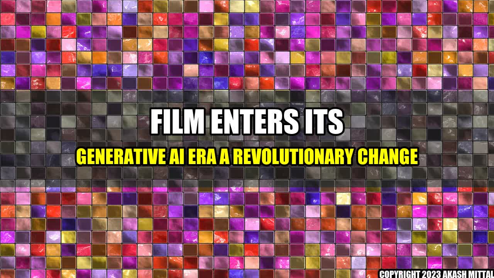

The Ultimate Form of Creativity: How Artificial Intelligence is Transforming the Film Industry

Imagine a world where a film director can conjure an entire cinematic universe on their computer screen with incredible detail and accuracy. Imagine a world where artificial intelligence (AI) can help craft plotlines, casting choices, and even special effects with unprecedented ease and speed. This world is now becoming a reality, as film enters its generative AI era.
Real-Life Examples:
- CognitiveScale: The AI firm helped Paramount Pictures to accurately predict the success of Top Gun: Maverick before its release, using machine learning algorithms to analyze social media and other data.
- Benjamin: The AI system created by Oscar Sharp and Ross Goodwin co-wrote the short film Sunspring, which premiered at the 2016 Sci-Fi London film festival.
- NVIDIA: The tech giant is developing AI-powered visual effects technologies, including using AI for image inpainting, rotoscope, and upscaling.
Main Companies:
- Deepak Chopra's 'Mynd' company: Utilizes AI and deep learning algorithms to create personalized health and wellbeing plans.
- CognitiveScale: A US-based AI firm that specializes in developing AI-powered solutions to enhance business operations and decision-making processes.
- NVIDIA: A technology giant that develops graphics processing units (GPUs) and AI technologies.
Conclusion:
- The film industry is constantly evolving, and AI represents the next frontier in this evolution.
- The use of AI is already transforming the film industry, from pre-production to post-production.
- As AI continues to advance, it not only has the potential to revolutionize the way films are made, but it could also lead to the creation of new forms of entertainment entirely.
References and Further Reading:
Hashtags:
- #filmindustry #AI #generativeAI #revolutionizingcinema #deepakchopra #cognitivescale #NVIDIA #creativeentertainment #AIinfilmmaking #futureofentertainment
By Akash Mittal
Akash Mittal Tech Article
Share on Twitter Share on LinkedIn